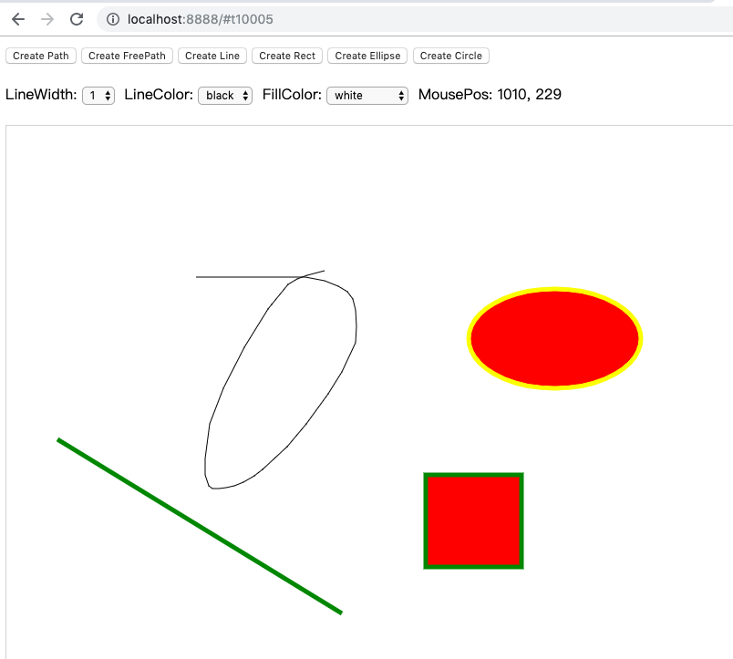

- 00 开篇词 怎样成长为优秀的软件架构师？.md
- 01 架构设计的宏观视角.md
- 02 大厦基石：无生有，有生万物.md
- 03 汇编：编程语言的诞生.md
- 04 编程语言的进化.md
- 05 思考题解读：如何实现可自我迭代的计算机？.md
- 06 操作系统进场.md
- 07 软件运行机制及内存管理.md
- 08 操作系统内核与编程接口.md
- 09 外存管理与文件系统.md
- 10 输入和输出设备：交互的演进.md
- 11 多任务：进程、线程与协程.md
- 12 进程内协同：同步、互斥与通讯.md
- 13 进程间的同步互斥、资源共享与通讯.md
- 14 IP 网络：连接世界的桥梁.md
- 15 可编程的互联网世界.md
- 16 安全管理：数字世界的守护.md
- 17 架构：需求分析 (上).md
- 18 架构：需求分析 (下) · 实战案例.md
- 19 基础平台篇：回顾与总结.md
- 20 桌面开发的宏观视角.md
- 21 图形界面程序的框架.md
- 22 桌面程序的架构建议.md
- 23 Web开发：浏览器、小程序与PWA.md
- 24 跨平台与 Web 开发的建议.md
- 25 桌面开发的未来.md
- 26 实战（一）：怎么设计一个“画图”程序？.md
- 27 实战（二）：怎么设计一个“画图”程序？.md
- 28 实战（三）：怎么设计一个“画图”程序？.md
- 29 实战（四）：怎么设计一个“画图”程序？.md
- 30 实战（五）：怎么设计一个“画图”程序？.md
- 31 辅助界面元素的架构设计.md
- 32 架构：系统的概要设计.md
- 33 桌面开发篇：回顾与总结.md
- 34 服务端开发的宏观视角.md
- 35 流量调度与负载均衡.md
- 36 业务状态与存储中间件.md
- 37 键值存储与数据库.md
- 38 文件系统与对象存储.md
- 39 存储与缓存.md
- 40 服务端的业务架构建议.md
- 41 实战（一）：“画图”程序后端实战.md
- 42 实战（二）：“画图”程序后端实战.md
- 43 实战（三）：“画图”程序后端实战.md
- 44 实战（四）：“画图”程序后端实战.md
- 45 架构：怎么做详细设计？.md
- 46 服务端开发篇：回顾与总结.md
- 47 服务治理的宏观视角.md
- 48 事务与工程：什么是工程师思维？.md
- 49 发布、升级与版本管理.md
- 50 日志、监控与报警.md
- 51 故障域与故障预案.md
- 52 故障排查与根因分析.md
- 53 过载保护与容量规划.md
- 54 业务的可支持性与持续运营.md
- 55 云计算、容器革命与服务端的未来.md
- 56 服务治理篇：回顾与总结.md
- 57 心性：架构师的修炼之道.md
- 58 如何判断架构设计的优劣？.md
- 59 少谈点框架，多谈点业务.md
- 60 架构分解：边界，不断重新审视边界.md
- 61 全局性功能的架构设计.md
- 62 重新认识开闭原则 (OCP).md
- 63 接口设计的准则.md
- 64 不断完善的架构范式.md
- 65 架构范式：文本处理.md
- 66 架构老化与重构.md
- 67 架构思维篇：回顾与总结.md
- 68 软件工程的宏观视角.md
- 69 团队的共识管理.md
- 70 怎么写设计文档？.md
- 71 如何阅读别人的代码？.md
- 72 发布单元与版本管理.md
- 73 软件质量管理：单元测试、持续构建与发布.md
- 74 开源、云服务与外包管理.md
- 75 软件版本迭代的规划.md
- 76 软件工程的未来.md
- 77 软件工程篇：回顾与总结.md
- 加餐 如何做HTTP服务的测试？.md
- 加餐 实战：“画图程序” 的整体架构.md
- 加餐 怎么保障发布的效率与质量？.md
- 热点观察 我看Facebook发币（上）：区块链、比特币与Libra币.md
- 热点观察 我看Facebook发币（下）：深入浅出理解 Libra 币.md
- 用户故事 站在更高的视角看架构.md
- 答疑解惑 想当架构师，我需要成为“全才”吗？.md
- 结束语 放下技术人的身段，用极限思维提升架构能力.md
- 课外阅读 从《孙子兵法》看底层的自然法则.md
28 实战（三）：怎么设计一个“画图”程序？
你好，我是七牛云许式伟。
前面的两节课结束后，我们的画图程序已经基本实用。它有如下功能：
- 可以选择全局的图形样式（lineWidth、lineColor、fillColor）；
- 可以以全局的图形样式来创建各类图形（Path、FreePath、Line、Rect、Ellipse、Circle）；
- 可以选择已经创建的图形，并修改其图形样式；
- 可以删除选择的图形；
- 可以移动选择的图形。
前面有一些同学的反馈，我这里想回答一下。
有一个反馈是对 JavaScript 的使用，我为什么会用 class 关键字。
这是因为我不太希望这是一篇某个语言的教程，我选择的是如何用最接近大家思维的表达方式来表达程序逻辑，你就算没有系统学过 JavaScript，也应该能够理解这段程序想要做什么。
另外有一个反馈，是希望我不要一上来就从 MVC 这种模式讲起，而是如果没有 MVC，我们用最基础的裸写代码，会写出一个什么样的程序来，里面有哪些弊端，从而引入 MVC 来让程序架构变得更加清晰，功能之间解耦。
这个意见我觉得是比较中肯的，后面我们会补充一讲来裸写 MVP 版本的画图程序。
今天我们开始进入“实战：怎么设计一个‘画图’程序”的第三讲，怎么和服务端连接。
考虑到大家普遍反馈内容有点深，我们把服务端连接分为两节课去聊。今天这一讲我们谈的是在浏览器端进行持久化。
为什么需要在浏览器端进行持久化？
因为我们需要有更好的用户体验。在用户断网的情况下，这个画图程序还可以正常编辑，并且在恢复联网的情况下，需要能够把所有离线编辑的内容自动同步到服务端。
结合前面几讲的介绍，你可能立刻想到 Google 推的 PWA，它非常关注浏览器应用的离线体验。
但是当我们做一个技术选型的时候，显然首先要考虑的是这个技术的兼容性如何。我们今天并不基于 PWA 来干这件事情，而是基于更传统的 localStorage 技术来干。
具体我们改的代码如下：
最核心的变化是 Model 层。完整的离线支持的 Model 层代码如下：
对象 ID
为了支持持久化，我们给每一个 Model 层 DOM 树的根 —— QPaintDoc 类引入了两个 ID，如下：
- localID: string
- displayID: string

其中 displayID 顾名思义，是用户可见的ID。我们的画图程序之前本地调试的行为是打开 http://localhost:8888/ 来编辑一篇文档（QPaintDoc），但是现在会自动跳转到 http://localhost:8888/#t10001 或类似的 URL。这里 t10001 就是文档的 displayID。
其中，displayID 前面带 t 开头，表示这篇文档从它被创建开始，从未与服务器同步过，是一篇临时的文档。一旦它完成与服务端的同步后，就会改用服务端返回的文档 ID。
那么，localID 是什么？顾名思义，是这篇文档的本地 ID。在文档还没有和服务端同步时，它和 displayID 是有关系的，如果 displayID 是 t10001，那么 localID 就是 10001。但是文档第一次保存到服务端后，它的 displayID 会变化，而 localID 则并不改变。
这有什么好处？
好处在于，我们在 localStorage 存储 DOM 树的时候，并不是把整篇文档 JSON 化后保存，而是分层的，QPaintDoc 里面的 shapes 数组保存的只是 shapeID。
是的，每个 Shape（图形）也引入了一个 ID。这样，当 Shape 发生变化，比如修改图形样式、移动，我们修改 shapeID => shapeJsonData。
请注意，在浏览器的 localStorage 里面，shapeID 是要全局唯一的，我们实际存储的是 QPaintDoc.localID + “:” + shape.id。
看到这里我们回过头来看，为什么 QPaintDoc 有 displayID 和 localID 就可以理解了。如果只有一个 ID 并且这个 ID 是会发生变化的，那么在 ID 变化时，所有保存在 localStorage 中的这篇文档的图形对象 shapeID => shapeJsonData 数据都需要跟着变化。
引入 localID 就是让 QPaintDoc 一旦初始化（QPaintDoc.init 方法）后 ，ID 就固定下来了，只需要保证在同一个浏览器下是唯一就行。
所以，我们第一次访问 http://localhost:8888/ 自动跳转的是 http://localhost:8888/#t10001 ，第二次访问自动跳转的就是 http://localhost:8888/#t10002 了。这是因为在同一个浏览器下，我们不会让两个 QPaintDoc.localID 相同。
数据变更
我们把数据变更分为了两级：
- shapeChanged
- documentChanged
什么情况下叫 shapeChanged？有这样三种：
- 增加一个图形（addShape），这个新增的 shape 发生了 shapeChanged；
- 修改一个 shape 的图形样式（setProp），这个被修改的 shape 发生了 shapeChanged；
- 移动一个 shape 的位置（move），这个位置改变的 shape 发生了 shapeChanged。
什么情况下发生 documentChanged？有这样两种：
- 增加一个图形（addShape），它会导致文档的图形数量增加一个，发生 documentChanged；
- 删除一个图形（deleteShape），它会导致文档的图形数量减少一个，发生 documentChanged。
当然，可以预见的未来，我们支持不同 shape 交换次序（改变 Z-Order），这时文档虽然图形的数目不变，但是 shapes 数组的内容还是发生了改变，发生 documentChanged。
发生数据变更做什么？
在 shapeChanged 时，更新 localStorage 中的 shapeID => shapeJsonData 数据。在 documentChanged 时，更新 localID => documentJsonData 数据。
从未来的预期来说，数据变更不只是发生在用户交互。考虑多人同时编辑一篇文档的场景。数据变更消息，也会来自其他浏览器端的变更。具体的过程是：
- Client B 操作 => Client B 的 DOM 变更 => 服务端数据变更 => Client A 收到数据变更 => Client A 的 DOM 变更 => Client A 的 View 更新
在前面 26 讲、27 讲中，我们并没有引入数据变更事件，而是 Controller 变更完数据后，就自己主动调用 qview.invalidateRect 来通知 View 层重新绘制。这样做比较简单，虽然它并不符合标准的 MVC 架构。因为从 MVC 架构来说，界面更新并不是由 Controller 触发，而应该由 Model 层的数据变更（DataChanged）事件触发。
存储的容量限制与安全
localStorage 的存储容量是有限制的，不同的浏览器并不一样，大部分在 5-10M 这个级别。在同一个浏览器下，会有多个 QPaintDoc 的数据同时被保存在 localStorage 中。
这意味着，随着时间的推移，localStorage 的存储空间占用会越来越大，所以我们需要考虑数据清理的机制。
目前，我们通过 localStorage_setItem 函数来统一接管 localStorage.setItem 调用，一旦 setItem 发生 QuotaExceededError 异常，说明 localStorage 空间满，我们就淘汰掉最远创建的一篇文档。
这样，我们就不会因为 localStorage 太满而没法保存。只要我们及时联网同步文档，数据也就不会丢失了。
最后一个话题是安全。
既然我们把数据保存在了 localStorage 中，只要用户打开浏览器，就能够去通过特定手段来查看 localStorage 的数据。
这意味着如果文档中存在敏感数据的话，是可以被人感知的。尤其是我们画图程序如果未来支持多租户的话，在同一个浏览器下多个用户帐号登录登出时，就会发生多个用户的文档都在同一个 localStorage 中可见。
这意味着你登出帐号之后，其他人用这个浏览器，其实还是可以看到你的数据。这样就有隐私泄漏的风险。
解决这个问题最简单的方法是在用户帐号登出的时候，清空所有的 localStorage 中的文档。
结语
今天我们开始考虑 “画图” 程序的服务端连接。今天这一讲我们先做画图程序的本地浏览器存储的持久化，以便拥有更好的离线。
支持离线持久化存储的程序会很不一样。我们今天结合画图程序聊了 DOM 树在 JavaScript 内存和在 localStorage 存储上的差别。为了支持更新数据的粒度不是整个文档每次都保存一遍，存储分成 shape、document 两个级别。相应的，我们数据更新事件也分了 shapeChanged、documentChanged 两个级别。
如果你对今天的内容有什么思考与解读，欢迎给我留言，我们一起讨论。下一讲我们将继续实战一个联网版本的画图程序。
如果你觉得有所收获，也欢迎把文章分享给你的朋友。感谢你的收听，我们下期再见。
© 2019 - 2023 Liangliang Lee. Powered by gin and hexo-theme-book.